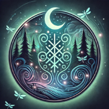

 Lilian’s Witchy World
Willkommen in meiner magischen Welt. Hier findest du Bücher, Zauberhaftes und vieles mehr.
Über mich
Willkommen auf meiner Seite! Mein Name ist Lilian, die Kurzform von Elisabeth-Ann.
Mit dieser Webseite teile ich meine Gedanken, Projekte und meine Leidenschaft für Kreativität und Natur.
Ich bin staatlich anerkannte Erzieherin mit Bachelor-Abschluss und ausgebildete Erlebnispädagogin. Viele Jahre lang habe ich mit Herzblut in verschiedenen Kindergärten gearbeitet und wertvolle Erfahrungen gesammelt.
Besonders inspiriert hat mich eine Einrichtung, in der alles harmonierte. Dort begann ich, Geschichten für Kinder zu schreiben – kleine Traumreisen, die die Fantasie anregen und Freude schenken. Es war unbeschreiblich schön zu sehen, wie die Kinderaugen leuchteten, wenn ich meine Geschichten vorlas. Dieser Moment hat mir gezeigt, dass meine Worte eine besondere Wirkung haben.
Schon früher habe ich leidenschaftlich geschrieben, doch erst jetzt habe ich den Mut gefunden, meine Geschichten mit der Welt zu teilen. So entstanden die ersten Bände meiner "Traumreisen mit Baldur". Mittlerweile sind Band 1 und Band 2 erhältlich, und ich habe mich auch an ein Buch für Erwachsene gewagt, das nun ebenfalls veröffentlicht ist.
Damit meine Geschichten noch mehr Menschen erreichen, werde ich sie auch als Audio-Versionen hier und auf YouTube verfügbar machen.
Ich verlege meine Bücher im Selbstverlag, unterstützt durch das technische Know-how meines Mannes. Es ist eine spannende Reise, und ich freue mich darauf, noch viele weitere Werke zu erschaffen.
Doch nicht nur das Schreiben begeistert mich – seit Jahren fasziniert mich die Welt der Kräuter. Ich stelle meine eigene natürliche Kosmetik her und habe für mich entdeckt, wie wertvoll und wirkungsvoll chemiefreie Alternativen sind. Diese Erfahrungen teile ich gerne, indem ich meine Rezepte für Hautpflege, Teemischungen, Salben und pflanzliche Heilmittel hier veröffentliche.
Ob Tees zur Entspannung, natürliche Pflegeprodukte oder selbstgemachte Heilmittel – ich liebe es, die Kraft der Natur zu nutzen und anderen damit zu helfen.
Was mir wichtig ist:
- Musik
- Yoga
- Ein bewusster und achtsamer Umgang mit der Natur
- Chemiefreie Alternativen für Kosmetik, Hygieneprodukte, Nahrungsmittel und Medizin
- Alles, was mit Entspannung und innerer Balance zu tun hat
- freie Entfaltung und Wandlung mit Hilfe von Worten
Vorallem eins macht mich aus.
DIY!
Ich mache so unglaublich viel selbst.
- Marmeladen (spezielle Sorten, auch mit Kräutern und Blüten)
- verschiedenste Limonaden mit Kräutern, Obst, Blüten
- einkochen/einwecken (selbstgemachter Kompott, Suppen, Soßen, ...)
- Seifen (für verschiedene Hauttypen und für energetische Reinigung)
- Salben/Cremes -> Rotöl (johanniskraut), Fichte (mit und ohne Minz, bzw Eukalyptusöl), Ringelblume, Rose (verschiedene Varianten), und viele mehr.
- Autorin von achtsamen und bewussten Traumreisen für Kinder und Erwachsene
- Teemischungen nach Beschwerden und Anliegen
- Räuchermischungen " "
- pflanzliche Medizin nach Beschwerden (von Sirup, bis hin zu pflanzlichem Antibiotika) - Schadet dem Körper nicht, im Gegensatz zur Chemie.
- Zuckerfreie Gummibärchen und andere Naschereien für Kinder
- selbstgemachte Säfte
- Im April habe ich angefangen Programmieren zu lernen und habe für meinen Mann und mich Webseiten erstellt, noch nicht fertig. Ist echt Arbeit.
- Körperpflegeprodukte für Haar und Haut
- Ich stricke und Häkele Kinderkleidung
- Ich habe auch schon ein Mittelalterkleid (Kind) komplett per Hand genäht, geplant sind noch mehr
Mal schauen, was für ein Thema/Projekt mich als nächstes interessiert. Ich liebe es, Neues zu lernen.
Aktuell arbeite ich an weiteren Projekten, darunter neue Bücher und Audioaufnahmen. Ich freue mich, wenn du mich auf dieser Reise begleitest!
Schön, dass du hier bist! Ich hoffe, meine Inhalte inspirieren dich und helfen dir weiter. Falls du Fragen hast oder ein individuelles Rezept für Haut und Haar möchtest, schreibe mir gerne über das Kontaktformular – ich freue mich, mein Wissen zu teilen!
„Ich bin Elisabeth-Ann Wolf – eine Hälfte eines Duos, das Gegensätze in Geschichten verwandelt.
Seine Bücher sind dunkle Reisen durch Welten voller Magie, Macht und Schatten – Dark Fantasy, die den Atem anhält.
Ihre Geschichten sind lichtvoll, achtsam und voller Herz – sie berühren, bewegen und heilen die Seele.
Gemeinsam formen wir Worte zu Welten, die man nicht nur liest, sondern erlebt. Für Träumer, Suchende und Schattenwanderer. Wir sind nicht irgendwer. Wir sind DAS Autorenpärchen.“
Unsere gemeinsame Webseite